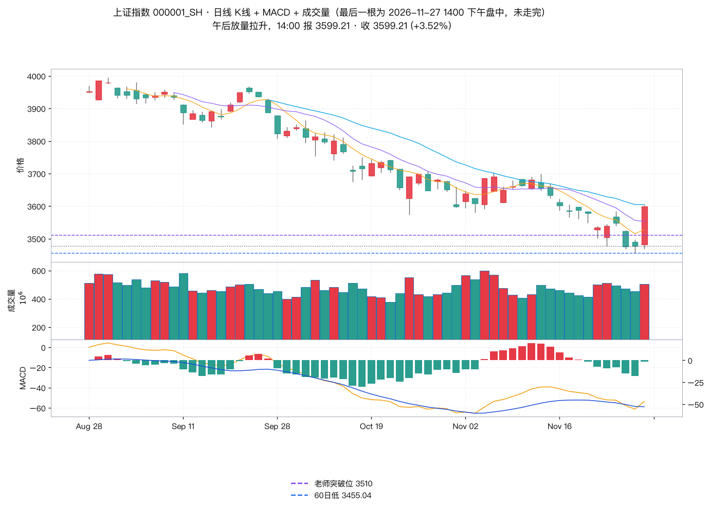
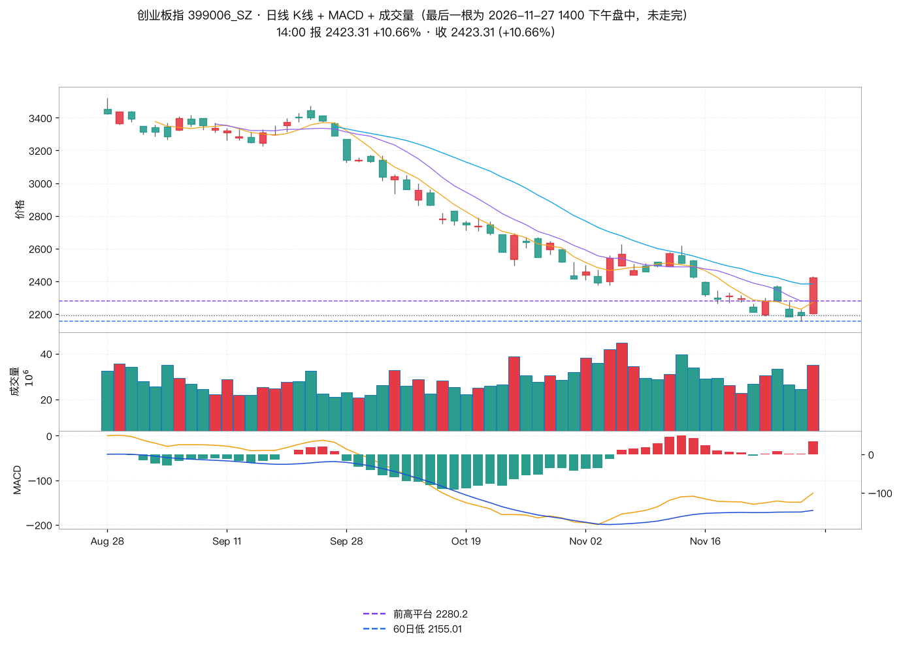
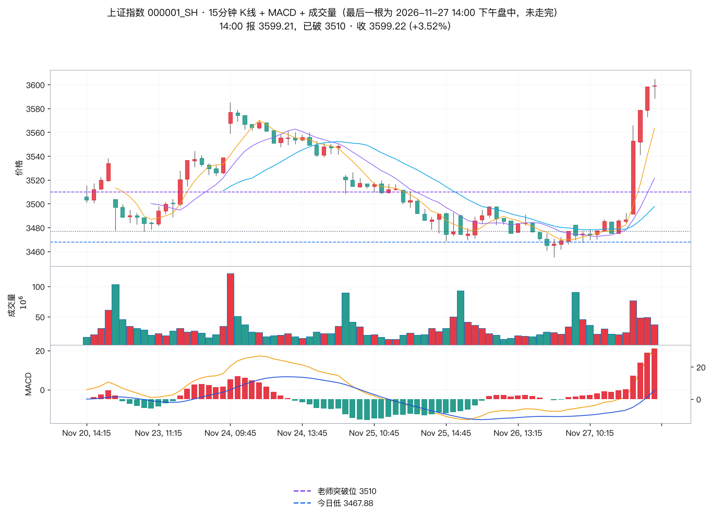
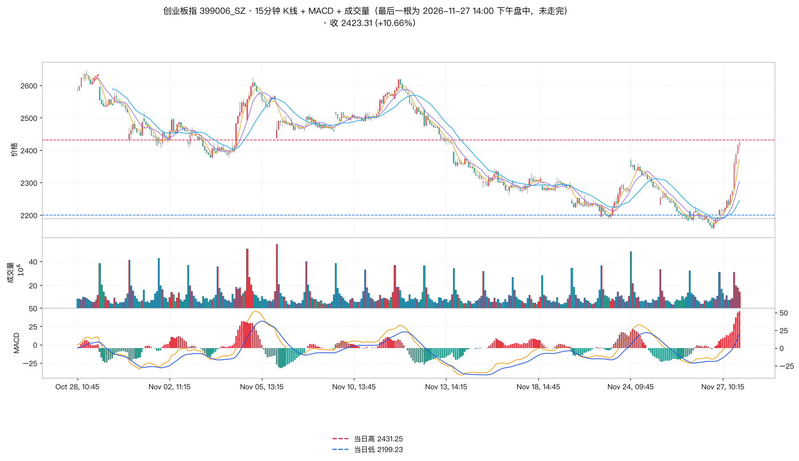
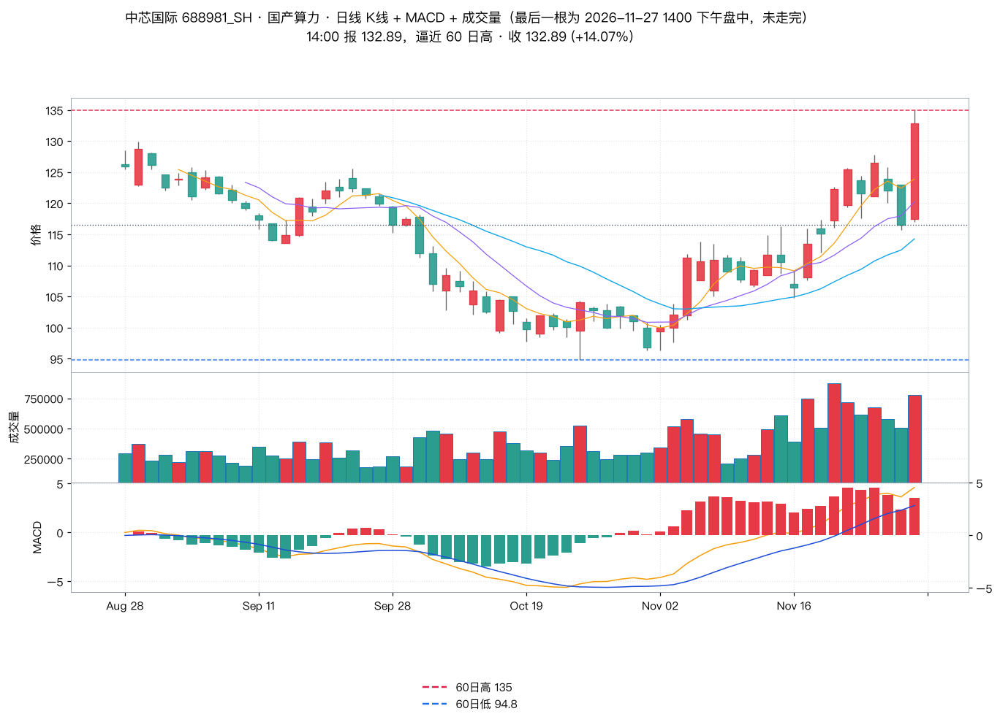
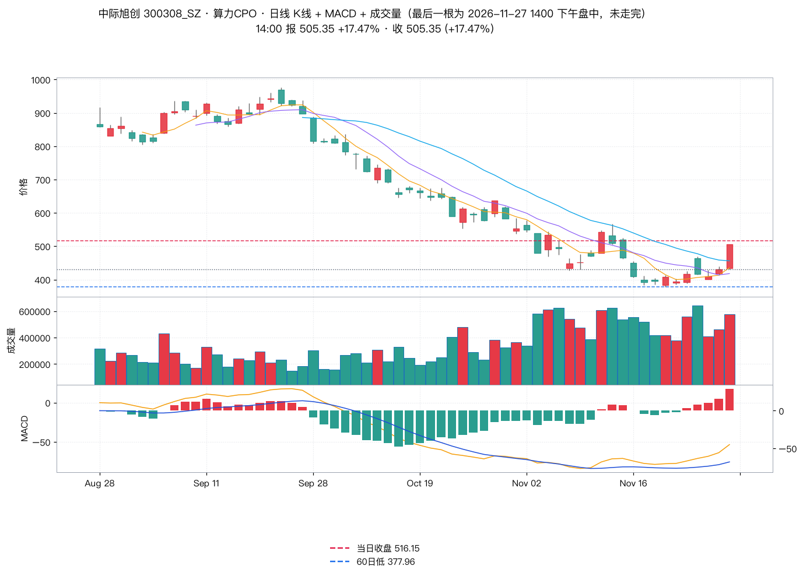

结论：午后放量拉升、短线基本见底，但已进压力区，不追涨、等回踩。 14:00 上证报 3599.21（+3.52%），越过老师 3510 关键位；两市同时点成交 16109 亿，较昨同刻 +58.4%。科技方向 14:00 涨幅 9%–13%（算力/CPO +13.29%），银行 -1.32%、高股息 -1.58% 仍在弱势。收盘 3606.49（+3.73%） 站上 MA5 3529.43。操作：不追涨，科技等小级别回踩；前期套牢仓到压力区不能突破就主动调仓。
① 「午后市场出现了快速的拉升」 —— 11:30 上证 3486.76 → 14:00 报 3599.21（+3.52%）；创业板指 2272.72 → 2423.31（+10.66%）、科创50 +13.76%，午后 2.5 小时涨幅远超上午 ✓
② 「已经突破了短线关键的位置」 —— 14:00 上证越过老师 11:30 口径的 3510 关键位 89.21 点；当日高 3610.72、收盘 3606.49 全天守住 ✓
③ 「量能也明显放大」 —— 两市 14:00 累计 16109 亿（昨同刻 10170 亿，+58.4%）；全天 19998 亿，环比 +51.8%（沪 9297.8 + 深综 10700.2）✓
④ 「短线基本上见底了」 —— 收盘 3606.49 站上 MA5 3529.43，止跌三要件第 2 条成立；日线底分型与第 3 根 K 线待下周一确认（老师口径）

上证指数：14:00 报 3599.21，已破 3510（末根为 11-27 14:00 盘中，未走完）

创业板指：14:00 报 2423.31，已越过 2280 前高平台（末根未走完）
以下两张为 15 分钟参照图（老师口径的底分型与回抽确认，我方未复算，仅作位置参照）。

上证 15 分钟：末根为 11-27 14:00 下午盘中，未复算 15 分钟结构

创业板 15 分钟：末根为 11-27 14:00 下午盘中，未复算 15 分钟结构
| 方向 | 老师口径（14:00） | 实测（14:00 篮子均值） | 判定 |
|---|---|---|---|
| 科技 | 「科技方向大幅反弹」 | 算力/CPO +13.29%、半导体 +12.56%、国产算力 +12.54%、华为概念 +10.84%、元件/PCB +10.12%，成分全涨 | 一致 |
| 主要板块 | 「主要板块还是没有彻底摆脱弱势震荡的结构」 | 银行 -1.32%（0/5）、高股息红利 -1.58%（0/7）、煤炭/石油 -1.48%、电力 -0.79% | 一致（保险 +2.23% 除外） |
| 压力区 | 「已经到达短线关键压力区间」 | 上证 3606.49 越过 11/20–11/24 密集区 3534–3548；创业板指 2443.96 越过 2279–2280；中芯国际 134.42 距 60 日高 135.00 仅 0.58 | 口径差异（老师未给数字） |
① 科技是今天唯一主线，涨停池 417 只，创业板与科创方向占主。② 但涨幅已极端：创业板指 +10.66%、中际旭创 +17.47%、华丰科技 +20.00% 涨停 —— 老师「不建议追涨」正落在这个位置。③ 权重红利端继续走弱，全面见底不成立。
| 标的 | 14:00 | 收盘 | 关键位 / 实测 | 动作（老师口径） |
|---|---|---|---|---|
| 中际旭创 300308（算力CPO） | 505.35 +17.47% | 516.15 +19.98% | 昨收 430.18，涨停封板 | 不追 |
| 华丰科技 688629（华为概念） | 111.00 +20.00% | 111.00 +20.00% | 20cm 涨停，60 日高 141.52 | 不追 |
| 中芯国际 688981（国产算力） | 132.89 +14.07% | 134.42 +15.38% | 突破位 122.00 已过（超 12.42）；距 60 日高 135.00 仅 0.58 | 已到压力区，等回踩 |
| 兆易创新 603986（存储芯片） | 216.45 +9.55% | 217.34 +10.00% | 涨停，站上 MA5 208.06 | 不追 |
| 华胜天成 600410（华为概念） | 20.90 +10.00% | 20.90 +10.00% | 涨停，等于 60 日新高 | 不追 |
| 创业板ETF 159915（宽基） | 2.444 +10.24% | 2.471 +11.46% | 破 2.244 已成立；今日最低 2.213 未破止损 2.17 | 三买条件（老师口径）待回抽 |
| 康龙化成 300759（大医药） | 44.72 +9.45% | 45.40 +11.11% | 过 43.58 突破位 1.82，非主线 | 不追 |
| 伊利股份 600887（大消费） | 32.72 -2.12% | 32.63 -2.39% | 盯 31.95，今日最低 31.97 未破（差 0.02） | 顶背驰未触发，持有者盯盘 |

中芯国际：14:00 报 132.89，距 60 日高 135.00 仅 0.58（末根未走完）

中际旭创：14:00 报 505.35 +17.47%，20cm 空间用尽（末根未走完）
① 上证守住 3510（收 3606.49、MA5 3529.43）→ 短线底分型成立概率上升；② 创业板指回踩 2279–2280 不破，回抽确认才算数（老师口径）；③ 周一 14:00 前两市成交额不低于今日同时点 16109 亿 的 70%，量能才算延续；④ 银行、高股息若继续 0/5 全绿，「主要板块摆脱弱势」不成立；⑤ ETF 份额 11/27 数据（Tushare 滞后一日，最新为 11/26：中证1000ETF +7.37%、创业板ETF +3.83%）若继续增，验证资金持续回流。
| 老师判据 | 实测 / 说明 | 判定 |
|---|---|---|
| 「一方面是消息面有利好」 | 非行情数据，无法核验 | 无法核验 |
| 「还没有回抽确认」「短线基本上见底」 | 缠论定性按老师口径引用，我方未复算 15 分钟结构；日线可核的是收盘站上 MA5（3606.49 > 3529.43）✓ | 老师口径 |
| 「市场直接 V 型反转的概率较小」 | 无法核验；实测 14:00 后继续走高，15:00 收 3606.49 为当日最高收盘 | 口径差异 |
| 「已经到达短线关键压力区间」 | 老师未给数字；以 11/20–11/24 密集区为参照核验，上证与创业板指均已越过，属「已突破」而非「刚到」 | 口径差异 |
| 「主要板块还是没有彻底摆脱弱势震荡」 | 银行、高股息成立，但保险 +2.23%、AI 视频/传媒 +6.69% 已转强 | 基本一致 |
「午后快速拉升」「量能明显放大」「科技方向大幅反弹」「不建议追涨」四条与实测一致 ✓
来源：都业华《高级班》2026-11-27 两点看盘（14:00），执业编号 A0400626100004。以上内容仅供参考，不作为买卖依据，据此操作风险自担。投资有风险，入市需谨慎。
口径：指数与个股点位为 14:00 腾讯分时切片（老师发言时点），收盘数取 Tushare 11/27 日线（前复权）；涨跌家数为收盘口径的新浪全市场快照，涨停为东财池 417 只；两市成交额 = 沪 sh000001 + 深 sz399106；板块为自建篮子 14:00 均值。
缠论定性（底分型、回抽确认、15 分钟三买）按老师口径引用，未做分钟级复算。